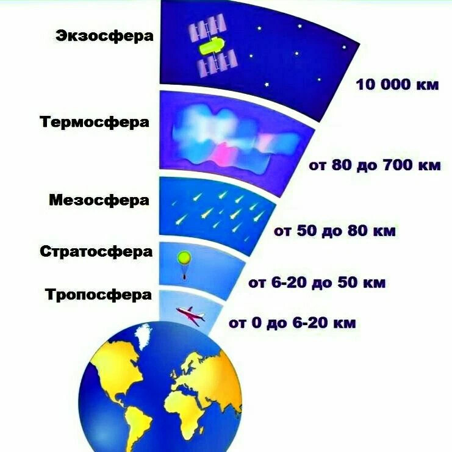
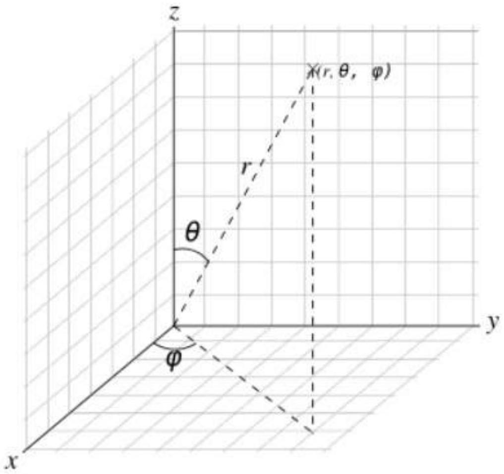

Диссипация планетных атмосфер
Проект по ссылке (или куаркоду с автовходом)
артур.эвристика.рф/?folder=/home/artur/atmoescape
github.com/arthur-fomin/atmoescape

Таким образом, молекулы в верхних слоях атмосферы имеют высокую вероятность приобрести составляющую скорости в направлении от поверх- ности планеты и на своём пути более никогда не встретить других частиц, столкновение с которыми способно отразить эти молекулы в обратном направлении. Если скорость поступательного движения молекул превышает вторую космическую для данной планеты, то молекула имеет шансы навсегда покинуть её атмосферу. Это приводит к постепенному рассеянию – диссипации – планетных атмосфер.
В данном вопросе предлагается исследовать различные механизмы диссипации (помимо вышеописанного) и оценить вклад каждого из них в скорость рассеяния атмосферы, на основе чего можно спрогнозировать время жизни, например, атмосферы Земли.
Тепловая диссипация
 Тепловая диссипация — это процесс
- малые газовые молекулы
- сталкиваются друг с другом
- некоторые достигают «второй космической»
- такие есть всегда, при любой температуре!
- но снизу не сможет улететь!
- столкнется!
- такие есть всегда, при любой температуре!
- сбежать можно из экзосферы
- плотность настолько мала
- → вероятность столкновения пренебрежимо мала
- нижняя граница → экзобаза
- Экзобаза Земли ≈
500 км- температура там ≈
1000 K
- температура там ≈
- проверим и посчитаем!
- Экзобаза Земли ≈
- плотность настолько мала
- заметна для планет меньших Земли 
- 2K меньше
- но реально всегда учитывают излучение звезды
- скорости по модулю и направлению
- для молекул газа массой при температуре
-
-
- дифференциал скорости в сферических координатах
-

Высота экзобазы
Уравнение состояния идеального газа:
- .
Средняя длина свободного пробега:
-
- — эффективное сечение столкновений атомов водорода
- в нашем случае
- температура экзосферы 1000K → 0.1 эв
- упругое (без ионизации)
- Grok дал разброс 3–10 Ų
- Gemini 8.8Ų
- в нашем случае
- — концентрация молекул.
- — эффективное сечение столкновений атомов водорода
- → .
Экзобаза — высота, выше которой
- частица, движущаяся радиально наружу,
- в среднем менее одного рассеяния.
- → средняя длина свободного пробега равна шкале высоты
- высоте, где плотность атмосферы в меньше поверхности
- «… Так, для высоты 275 км были получены значения 60 км в 1958 году и 40 км в 1960—1961 годах…»
- высоте, где плотность атмосферы в меньше поверхности
Например,
- из моделей
- Высота
-
- зависит от Солнечной активности
- →
- еще не экзосфера, эктобаза выше
- смоделируем экспоненциальное убывание c этой высоты
- хотя в экзосфере, выше гомосферы тоже не очень работает Больцман, как раз из-за улетучивания
Плотность атмосферы экспоненциально убывает с высотой
- будем отсчитывать с этих
200 км:
Экзосфера, когда .
- →
- →
Детальные расчеты с допусками и единицами измерения
- в
notes/расчеты-к-испарению.ipynb- там же можно «поиграть» с входными параметрами.
,
- →
В notes/расчеты-к-испарению.ipynb
- было:
(4.4+/-0.5)e+02 kilometer
- что похоже на
- Экзобаза Земли находится на высоте примерно 500–1000 км над уровнем моря, в зависимости от солнечной активности
Поток атмосферного испарения
Атомы на экзобазе с достаточной внешней скоростью
- → преодолеют гравитационное притяжение.
Определим вероятность:
- что атом водорода имеет скорость,
- превышающую вторую космическую
скорость
- на экзобазе.
- превышающую вторую космическую
скорость
Интегрируем распределение Максвелла,
- по от до
- по от до
Получаем распределение модуля скорости:
Скорость побега, 2K, известна, но можно пересчитать:
В notes/расчеты-к-испарению.ipynb
- было:
(1.082+/-0.004)e+04 meter/second
10815.97357436471+/-42.981716415365625
- Похоже на общеизвестные
11км/c, но меньше- но для твердых тел наверно учитываются столкновения

Остальные константы:
- .
- Температура на экзобаре очень неочевидна
- Получается измерениями
- Например, на Венере всего 350K, хотя планета горячая.
- Температура на экзобаре очень неочевидна
Вероятность побега:
В notes/расчеты-к-испарению.ipynb
- было:

0.00270759621084221
- не получилось 🤷 😭
- сохранить неопределенность после интегрирования
- когда-нибудь поисследовать 🤔
Определим поток убегающих атомов водорода
- количество частиц на единицу площади в единицу времени
- концентрация атомов водорода на экзобазе составляет .
Рассмотрим элемент поверхности
- нормаль по радиусу Земли
Беглецы с улетят, если
- радиальная компонента направлена вверх
- в экзосфере столкновениями можно пренебречь
Объем, из которого частицы со скоростью пройдут через за время :
- .
Число атомов водорода в этом объеме:
- .
Число атомов с вектором скорости :
Интегрируя по (0 до ) и ( до ):
Поток испаряющихся атомов:

В notes/расчеты-к-испарению.ipynb
- →
783525351902.222(в )
Испарение атмосферы
Факты:
- Моль масса атмосферы
- Улетает атомарный водород
- в экзосфере он распадается на атомы
- солнечное излучение разбивает
- Доля водорода в атмосфере равна
- в экзосфере он распадается на атомы
- С экзосферы
- На эктобазе будем считать концентрация водорода постоянна
- «Все никогда не улетит»
- будет уменьшаться по экспоненте
Посчитаем «атмосферу в атомах водорода».
Сила, действующая на поверхность Земли:
-
- → .
Число молекул в атмосфере:
- .
В notes/расчеты-к-испарению.ipynb
- →

(1.0801+/-0.0034)e+44
Число атомов водорода:

Прикинем «полураспад» водорода
- «улетела половина атомов водорода»
- не будем учитывать возобновление, гидросферу и т.п.
Число улетающих атомов в единицу времени:

- .
- .
Время «полураспада»:


Полную потерю
- считать бессмысленно
- даже после испарения океанов
- будет другая атмосфера, с другими газами
- как на Марсе, который потерял воду
- будет другая атмосфера, с другими газами
- нужна модель с учетом изменения светимости Солнца
- это будет дальше